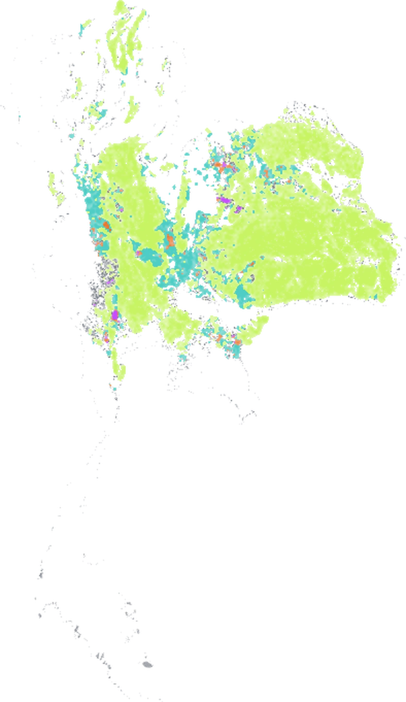

MIT Earth Intelligence Lab · AAAI 2024
Mapping smallholder crop types in Thailand from Street View images
A national 10 m map of rice, cassava, maize and sugarcane for 2022, supervised by street-view CNN labels instead of field surveys; 93% accurate against expert labels.

Accuracy by class
F1 score of the published map on the expert-labelled test set. The swatches are the map colours.
My role
I trained street-view CNNs for crop-type classification, compared expert, web-scraped and GPT‑4V zero-shot labels as their supervision, and transferred the resulting labels to a classifier on satellite time series.
Problem
Satellite crop-type classifiers are limited by ground labels, which smallholder regions rarely have. The question is whether labels inferred from street-level imagery can replace field surveys.
Method
An expert labelled 1,922 Street View images. CNNs trained on them pseudo-label the remaining images, and about 81,000 high-confidence labels supervise a random forest on satellite time series that maps all of Thailand at 10 m. We then ablate the source of supervision for the CNN: expert labels, weak web labels (Google Images, iNaturalist) and GPT‑4V zero-shot labels.
Results
Map accuracy by source of training labels
Same satellite classifier in every row; only its training labels change. Mean over 5 runs; bars show the spread.
Limitations
- The best map still depends on 1,153 expert-labelled training images.
- Accuracy is measured against expert labels, not field surveys.
- The map covers a single season.